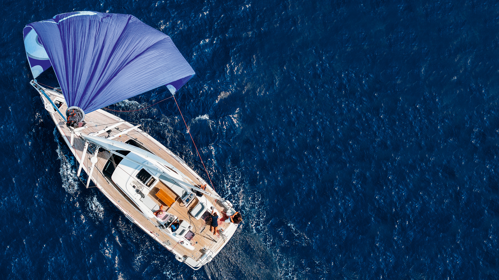
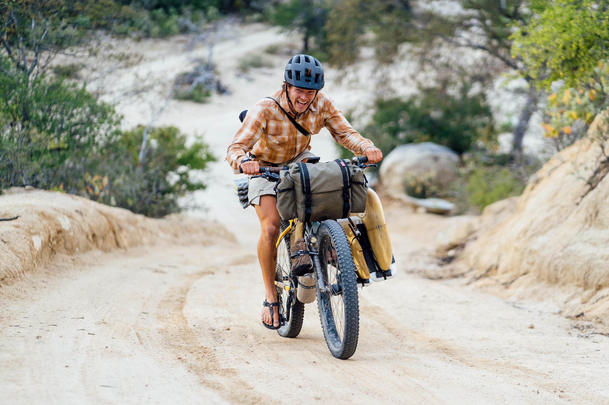
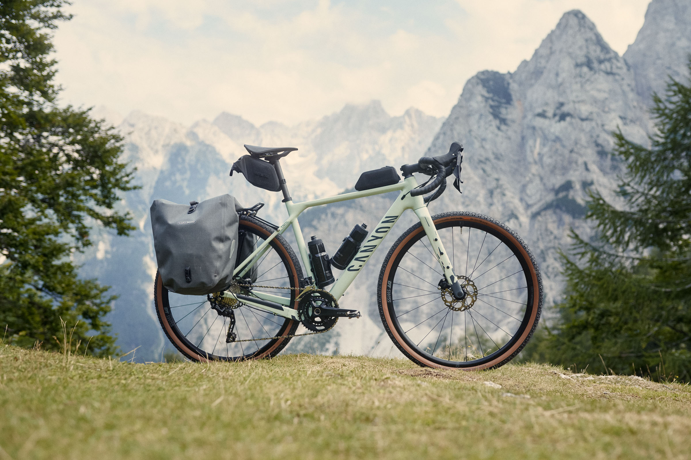

La Nostra Gloriosa Odissea

L'immensità dell'oceano ci attende: la prossima grande sfida.
Allacciate le cinture (o meglio, stringete le cinghie dei portapacchi)! I SaltRiders, GG e Paco, stanno per intraprendere un'odissea che riscriverà le regole dell'esplorazione... o almeno, ci proveranno con stile. Dal cuore pulsante dell'Europa, questi due intrepidi (o incoscienti?) avventurieri scateneranno le loro fidate bici e tavole da surf in un tour de force via terra e mare, pronti a collezionare culture esotiche e panorami da cartolina.
La loro filosofia di viaggio? Più che un piano, una dichiarazione d'intenti, aperta all'imprevisto e all'ingegno:
- Europa Express, con la Calma dei Campioni: Da Milano, un inizio 'soft' su rotaia verso ovest, giusto per assaporare il Vecchio Continente prima del vero caos.
- Scalate Epiche (e Forse Poco Sensate): Un avvio in bicicletta da Torino, con l'ardua impresa di valicare un importante passo alpino con tavole al seguito, per planare (si spera con tutte le ossa intere) su Grenoble. Chi sano di mente lo farebbe? Noi! Seguirà un trasferimento via terra più convenzionale verso San Sebastián, dove l'asfalto tornerà a chiamare le loro ruote.
- Cavalcando l'Atlantico Iberico (e le Salite): Pedalando come se non ci fosse un domani da San Sebastián lungo le coste selvagge di Spagna e Portogallo, alla ricerca di spot da urlo, onde perfette e, possibilmente, un posto dove montare la tenda.
- Rotta per i Caraibi: Da Las Palmas de Gran Canaria, ci intrufoleremo nella flotta dell'ARC (Atlantic Rally for Cruisers) il 23 Novembre 2025. L'obiettivo: trovare un imbarco direttamente sui pontili o tramite contatti improbabili. Pronti ad attraversare l'Atlantico veleggiando verso Saint Lucia, sperando di non finire a lavare i piatti per tutta la traversata.
- Sogno Pacifico: Due Destini, Stessa Follia:
- Opzione A - Traversata Oceanica da veri Lupi di Mare (o quasi): Dai Caraibi, un passaggio 'al volo' via mare per Panama. Da lì, l'immensità del Pacifico: un'avventura di pura navigazione verso perle come le Galápagos e le isole della Polinesia Francese, affidandoci al buon cuore delle onde, dei venti e di chiunque abbia una cuccetta libera.
- Opzione B - Radici Sudamericane e Polpacci d'Acciaio: Un passaggio marittimo dai Caraibi all'Ecuador segnerà l'inizio di una LUNGA pedalata. Giù per la costa Pacifica del Sudamerica, inseguendo onde mitiche, attraversando deserti e montagne che metteranno alla prova anche i più stoici. Un'immersione nel cuore pulsante del continente fino al Cile, o finché le gambe reggeranno.
Dimenticate le tabelle di marcia precise: questo è più un manifesto al viaggio vissuto con spirito indomito, un brindisi all'imprevisto che diventa la norma e un tributo a ogni singola, strampalata, meravigliosa connessione umana. Restate sintonizzati, perché il bello deve ancora venire (e probabilmente non andrà come previsto)!
L'Arsenale dei Sognatori: Bici, Surf & Tenda
L'essenza di un'avventura così particolare risiede anche nella genialità della semplicità e in un pizzico di spirito d’adattamento. Per affrontare le lunghe tratte costiere, GG e Paco hanno scelto bici gravel equipaggiate con supporti laterali dedicati per trasportare le loro amate tavole da surf. Questo sistema ingegnoso permette loro di essere agili come gazzelle (carichi come muli) e vivere appieno l’esperienza del viaggio a misura d’uomo e di tavola.

Il nostro assetto da SaltRiders: bici, tavola e orizzonti infiniti.
Il supporto è leggero ma resistente, e se il vento laterale si farà sentire… fa parte dell’avventura. Con loro anche una tenda compatta, per fermarsi dove capita e dormire sotto le stelle, pronti a ripartire all’alba con la fedele compagna d’onda sempre al fianco, come un’appendice aerodinamica un po’ sbilenca ma indispensabile.

La nostra fidata compagna a due ruote, pronta ad affrontare ogni tipo di terreno.